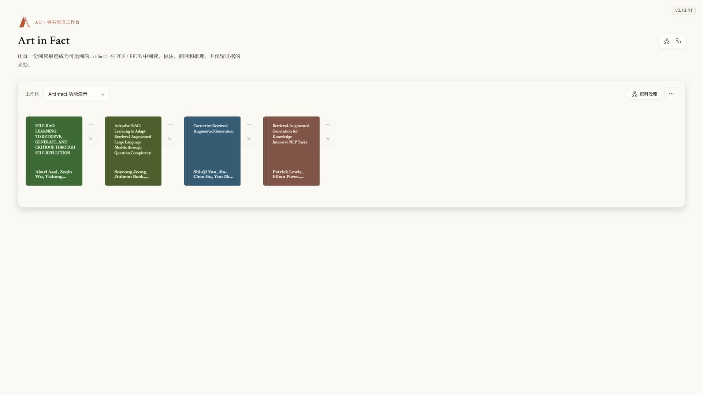
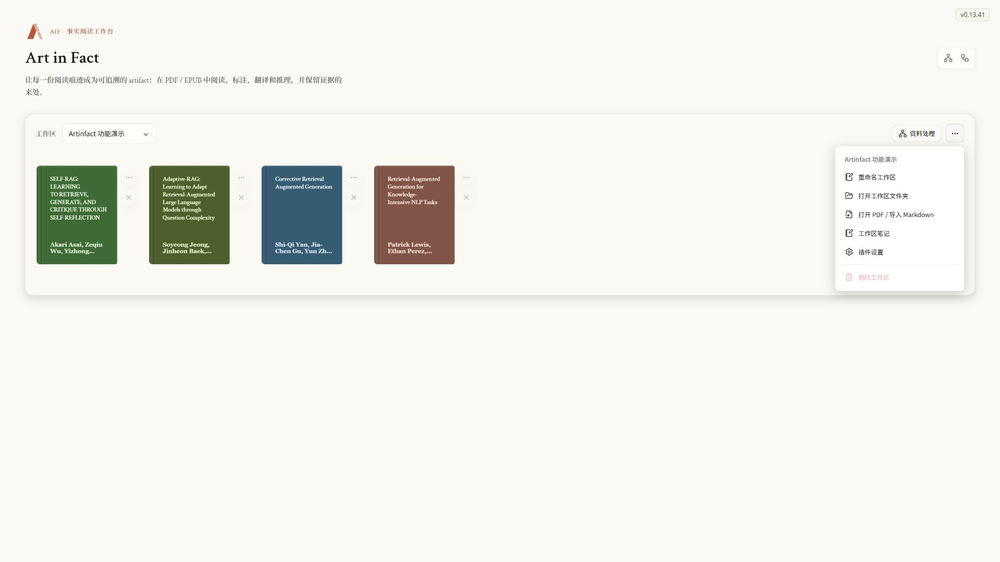
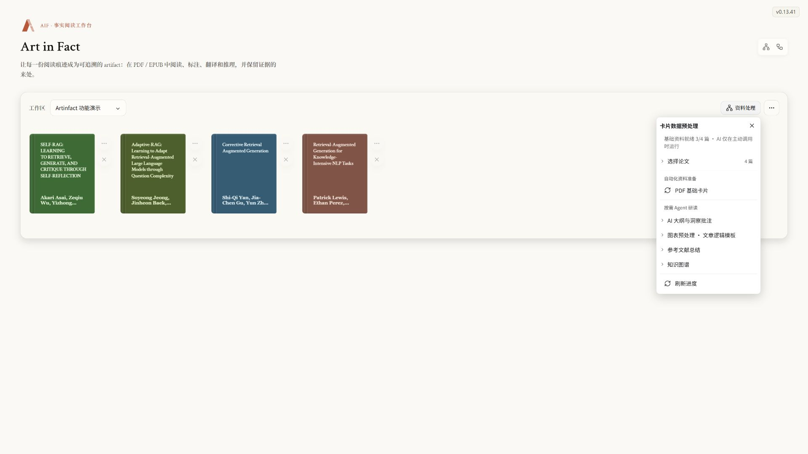
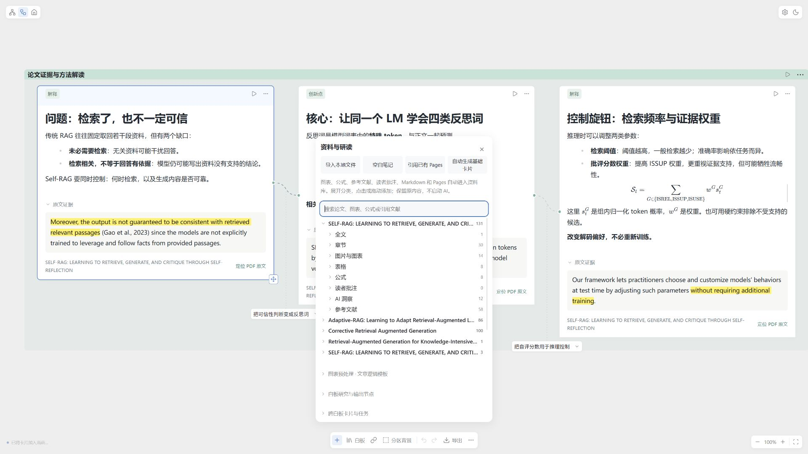
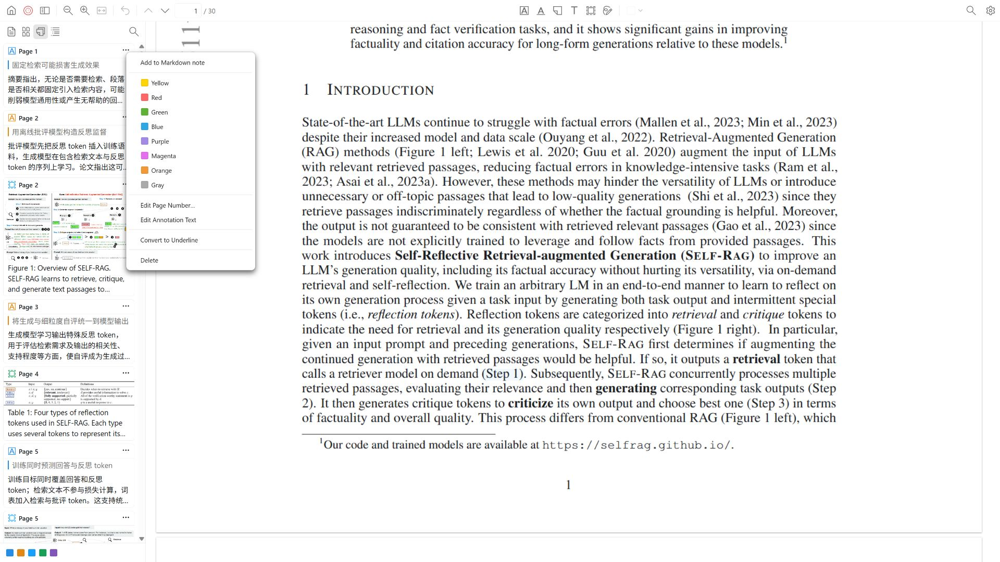
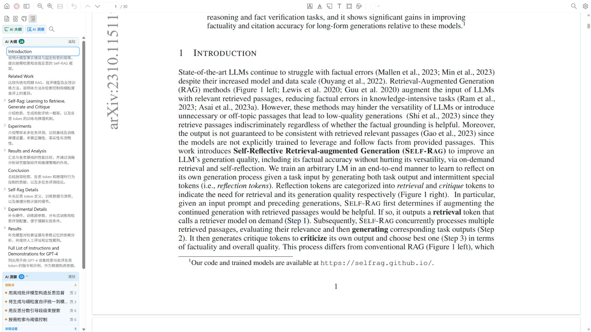
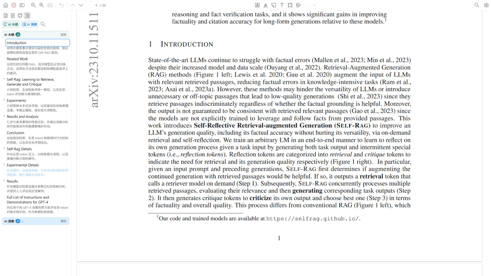
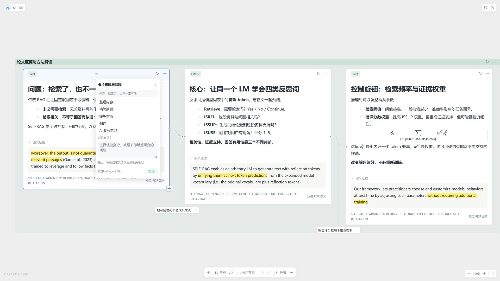
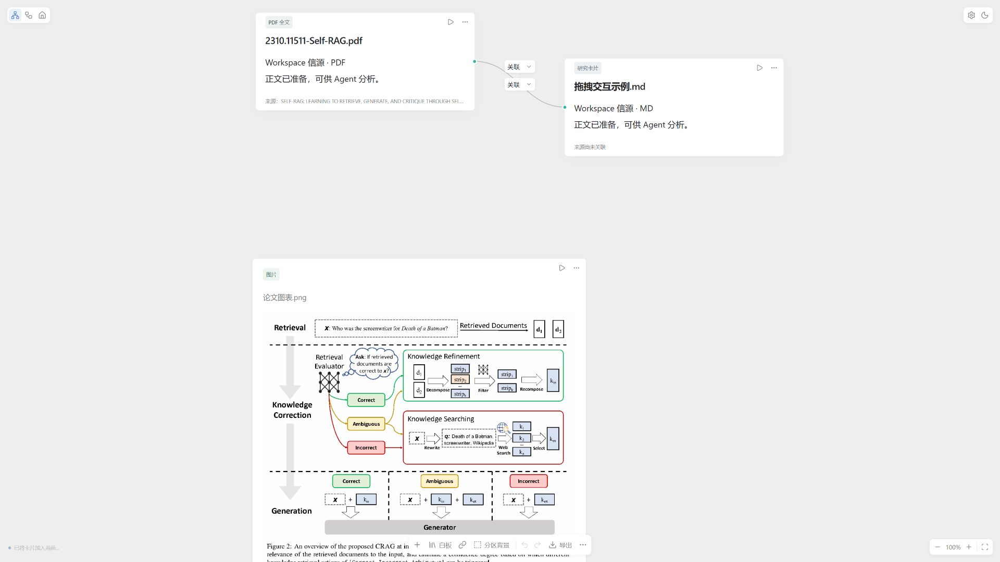
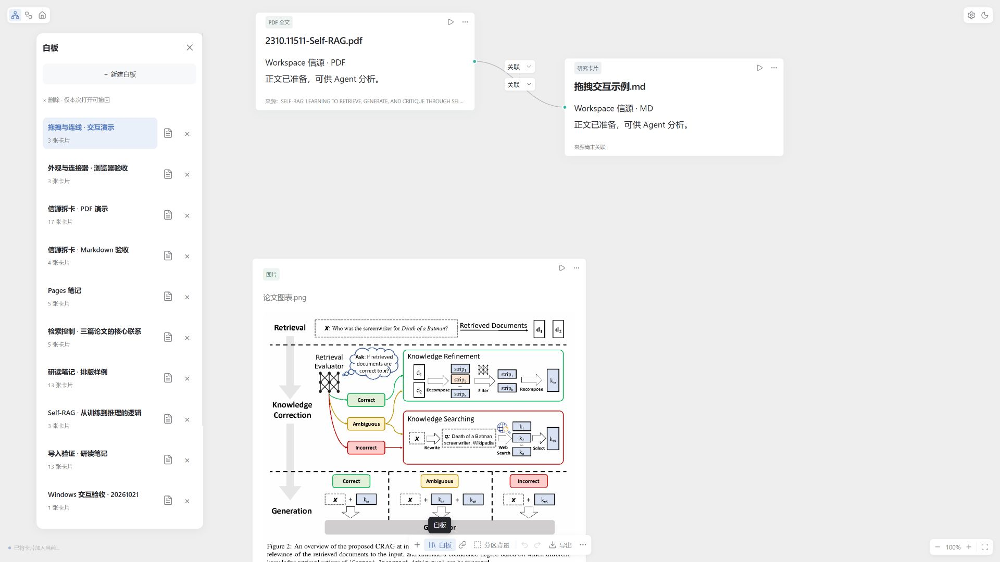

01
工作区与书架
按研究主题集中管理论文与笔记，在同一工作区查看题名、作者和阅读资料，让分散的文件形成可持续积累的研究书架。
20 项功能，围绕资料准备、阅读标注、分析推导、知识组织和成果复用展开。每项用一张真实截图和一段说明呈现。
真实界面截图 · 白天主题 · 1920 × 1080 · 点击图片查看原图。截图来自 0.13.41 本机演示版，界面语言为中文；部分相关功能共享截图，当前版本可能略有不同。

按研究主题集中管理论文与笔记，在同一工作区查看题名、作者和阅读资料，让分散的文件形成可持续积累的研究书架。

支持导入本机 PDF、Markdown、图片与可编辑白板包，把论文原文、图表和自己的记录放到同一研究环境中，方便后续阅读和引用。

将论文解析为 Markdown、结构信息、图表及坐标，为章节导航、图表拆卡和后续研读准备资料；解析准备与主动调用 AI 分开进行。

把全文、章节、图表、公式、批注和参考文献组织为可搜索的资料目录，按需要取出独立卡片，保留内容与原始来源的联系。

在内置 Zotero PDF 阅读器中完成翻页、缩放、搜索和结构浏览，配合侧栏查看批注与大纲，阅读进度和记录保存在本机。

通过高亮、下划线、便笺、文字与区域选取记录阅读痕迹，将关键句、图表和自己的判断连在一起，并为继续提问提供上下文。

根据论文资料整理可定位的章节大纲，并用简短说明呈现各部分的作用，帮助快速把握文章结构，再围绕重点深入阅读。

将创新点、关键证据和研究限制整理为带页码的洞察，既便于浏览论文贡献，也能回到原文核查结论和实验条件。

围绕单张卡片完成内容整理、摘要、重点提炼、翻译与自定义研读，把零散资料转为便于理解的笔记；改写内容可先审阅再接受。

结合论文中的原始图表和公式展开识读、解释与逐步推导，也可生成关联的解释图片，让原始证据与进一步分析分别保留。

用连接表达资料之间的输入依赖和背景关系，把多张卡片或多篇论文组织为一个研究问题，为方法比较和证据对照提供明确范围。

用分区把相关资料聚在一起，围绕共同问题开展研究，并将结果留在对应白板中，逐步形成带来源的专题分析与论证链。

为不同问题建立独立白板，通过拖动、缩放、分区和连接自由整理卡片，让同一批资料形成多种研究视角与展示结构。

使用 Markdown 富文本编辑标题、列表、任务项、引用、图片、表格、代码和公式，把阅读记录整理为可持续修改的笔记并自动保存。
在分析笔记旁保留原文证据、论文来源与页码，通过定位链接回到 PDF 上下文，让结论可以追溯，也便于区分原文事实与自己的推断。

把来源、概念、证据、条件与问题沉淀为 Wiki 页面和双向链接，再以动态知识图谱展示跨文献关联，帮助发现共同机制与研究边界。
基础解析与 AI 研读分开进行。Pages、AI 生成和下载等能力取决于连接的宿主或服务；解析与生成结果应对照原文核查。